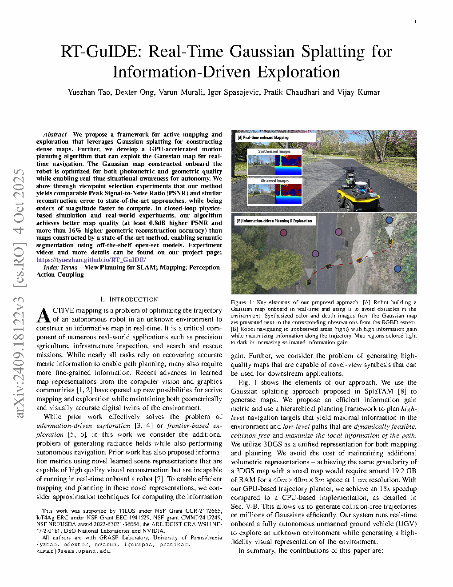
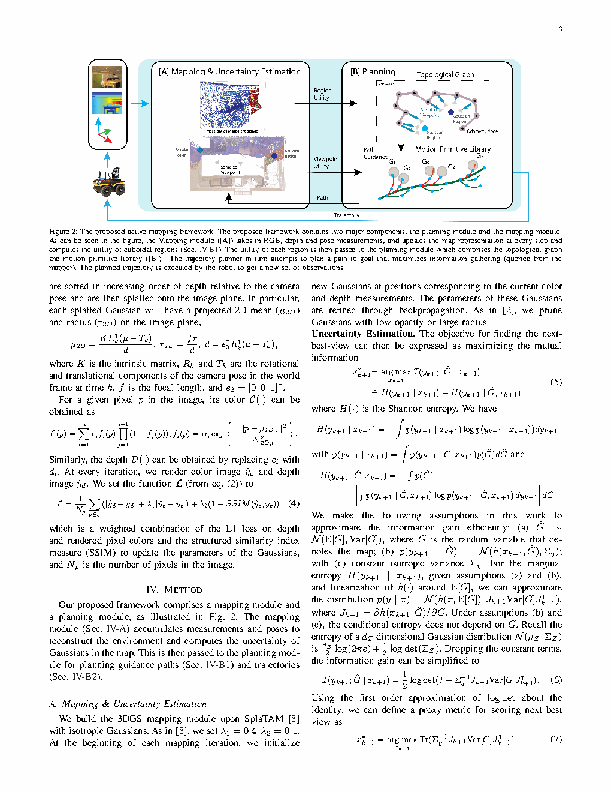
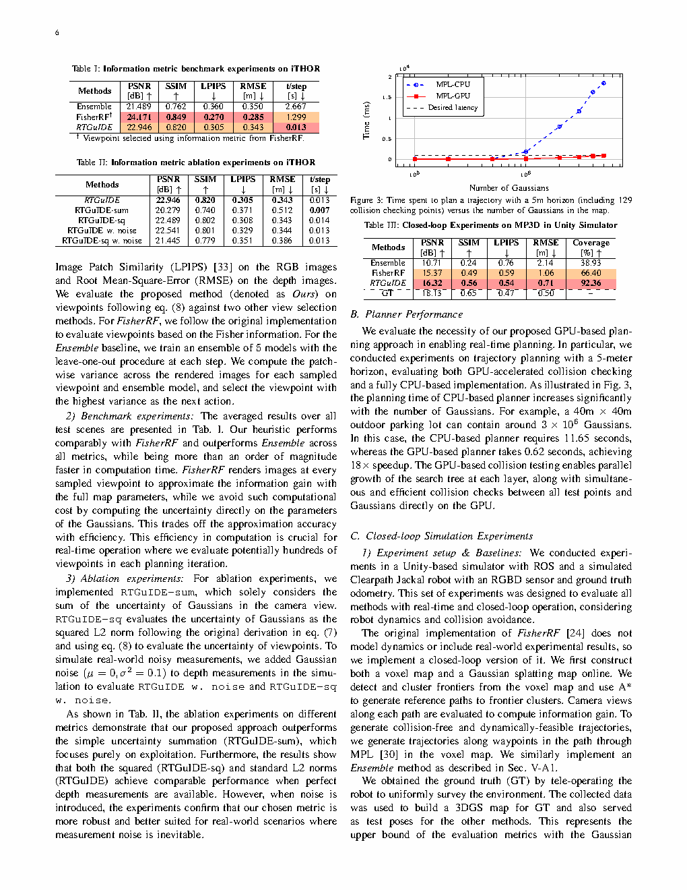

| Title | RT-GuIDE: Real-Time Gaussian Splatting for Information-Driven Exploration |
| Authors | Yuezhan Tao, Dexter Ong, Varun Murali, Igor Spasojevic, Pratik Chaudhari, Vijay Kumar |
| Affiliation | University of Pennsylvania, GRASP Lab |
| Venue | 2025 Conference. Project page: tyuezhan.github.io/RT_GuIDE. Code will be open-sourced. |
| DOI / Links | Project: tyuezhan.github.io/RT_GuIDE | Platform: Clearpath Jackal UGV, NVIDIA GPU |
| TL;DR | RT-GuIDE —— 一个使用 3D Gaussian Splatting (3DGS) 进行主动建图与探索的统一框架。GPU 加速的运动规划直接在高斯地图上运行，无需中间体素转换。基于高斯参数位移的新型信息增益启发式，消除了渲染开销。分层规划：高层拓扑图用于区域选择 + 低层运动基元树用于轨迹生成。相比 CPU 规划实现 18 倍 GPU 加速，闭环仿真中 PSNR 高出 0.95dB、覆盖率达 92.36%（FisherRF 为 66.40%），并在 4 个环境中实现实时机载 UGV 操作。 |
| 灵感来源 | 启发了什么洞察 | 类型 |
|---|---|---|
| 3DGS as an explicit, differentiable scene representation (Kerbl et al., 2023) | 3DGS 将场景表示为具有位置、颜色和协方差的显式高斯基元。与 NeRF 的隐式 MLP 不同，3DGS 基元可直接查询空间占据情况 —— 从而在无需渲染的情况下进行碰撞检测。这将 3DGS 从"仅用于可视化"的表示转变为"对规划器友好"的表示。 | 架构 |
| SplaTAM (Keetha et al., 2024) for online SLAM with 3DGS | SplaTAM 表明 3DGS 可从流式 RGB-D 数据中以各向同性高斯增量更新。RT-GuIDE 在此建图骨架上增加了规划维度 —— 闭合了"我在哪里"和"我下一步该去哪"之间的回路。 | 方法 |
| Fisher Information as uncertainty metric (FisherRF, Jiang et al., 2024) | FisherRF 通过渲染场景来计算逐像素 Fisher 信息。RT-GuIDE 推导出一种免渲染替代方案：建图迭代间高斯均值位移的幅度作为信息增益的代理量，由 Fisher 信息近似所支撑。这消除了渲染瓶颈（0.013s vs 1.299s）。 | 数学 |
| Motion primitive-based planning for ground robots | 独轮车动力学 + 运动基元树是非完整约束规划的标准方法。RT-GuIDE 的创新在于将树搜索完全在 GPU 上运行，并行地对数百万个高斯进行碰撞检测 —— 实现 18 倍 CPU 加速。 | 工程 |
flowchart TB
subgraph SENSING["Sensing"]
RGBD["RGB-D Camera
Streaming Input"]
ODOM["Odometry
Pose Estimation"]
end
subgraph MAPPING["Mapping: SplaTAM-based 3DGS"]
SPLATAM["SplaTAM: Online 3DGS SLAM
Isotropic Gaussians, L1+SSIM Loss"]
GAUSSIANS["3D Gaussian Map G
{mu_k, Sigma_k, c_k, alpha_k}"]
DISPLACE["Gaussian Displacement
||mu_k - mu_{k-1}||_2"]
end
subgraph HIGH_PLAN["High-Level Planner: Region Selection"]
PARTITION["Partition Space into
Cuboidal Regions"]
UNCERTAINTY["Compute Mean Uncertainty
Omega_k per Region"]
TOPO["Build Topological Graph
Odometry + Viewpoint Nodes"]
DIJKSTRA["Dijkstra Shortest Path
+ Cost-Benefit: Omega/e^d"]
SELECT["Select Best Region"]
end
subgraph LOW_PLAN["Low-Level Planner: Trajectory Generation"]
PRIMITIVES["Motion Primitive Tree
Unicycle Dynamics"]
GPU_COL["GPU Collision Checking
P(d_kappa < gamma) <= eta"]
ASTAR["A* Tree Search
Maximize Information Utility xi"]
TRAJ["Best Trajectory
+ Control Commands"]
end
subgraph EXEC["Execution"]
CTRL["Send Velocity Commands
to UGV Actuators"]
end
RGBD --> SPLATAM --> GAUSSIANS
ODOM --> SPLATAM
GAUSSIANS --> DISPLACE
DISPLACE --> PARTITION --> UNCERTAINTY --> TOPO --> DIJKSTRA --> SELECT
SELECT --> PRIMITIVES
GAUSSIANS --> GPU_COL
PRIMITIVES --> GPU_COL --> ASTAR --> TRAJ
TRAJ --> CTRL
CTRL -->|"New observation"| RGBD
classDef sense fill:#fef7ed,stroke:#f59e0b,stroke-width:2px
classDef map fill:#e8f0fe,stroke:#3b82f6,stroke-width:2px
classDef high fill:#f0ebfd,stroke:#8b5cf6,stroke-width:2px
classDef low fill:#e6f7ee,stroke:#10b981,stroke-width:2px
classDef exec fill:#dbeafe,stroke:#2563eb,stroke-width:2px
class RGBD,ODOM sense
class SPLATAM,GAUSSIANS,DISPLACE map
class PARTITION,UNCERTAINTY,TOPO,DIJKSTRA,SELECT high
class PRIMITIVES,GPU_COL,ASTAR,TRAJ low
class CTRL exec
flowchart TB
subgraph MAP_UPDATE["Map Update Cycle (~1-3 Hz)"]
M1["New RGB-D Frame + Pose"] --> M2["SplaTAM: Add/Update Gaussians"]
M2 --> M3["Compute Displacement per Gaussian"]
M3 --> M4["Update Uncertainty Map"]
end
subgraph GLOBAL["Global Planning (~1 Hz)"]
G1["Partition updated Gaussians
into spatial regions"] --> G2["Compute Omega_k = mean
displacement per region"]
G2 --> G3["Build topological graph
nodes: odometry path +
region center viewpoints"]
G3 --> G4["Dijkstra + cost-benefit
select target region"]
end
subgraph LOCAL["Local Planning (~10 Hz)"]
L1["Generate motion primitive tree
from current pose"] --> L2["GPU collision check:
all test points vs all Gaussians"]
L2 --> L3["Evaluate trajectory utility
xi = sum over high-unc
- lambda * sum over low-unc"]
L3 --> L4["A* selects best trajectory"]
end
subgraph FEEDBACK["Feedback Loop"]
F1["Execute trajectory segment"] --> F2["Collect new observations"]
F2 --> F3["Update map -> updated
displacement -> replan"]
end
MAP_UPDATE --> GLOBAL --> LOCAL --> FEEDBACK
FEEDBACK --> MAP_UPDATE
classDef map fill:#e8f0fe,stroke:#3b82f6,stroke-width:2px
classDef global fill:#f0ebfd,stroke:#8b5cf6,stroke-width:2px
classDef local fill:#e6f7ee,stroke:#10b981,stroke-width:2px
classDef fb fill:#fef7ed,stroke:#f59e0b,stroke-width:2px
class M1,M2,M3,M4 map
class G1,G2,G3,G4 global
class L1,L2,L3,L4 local
class F1,F2,F3 fb
flowchart TD
subgraph INIT["Initialization"]
I1["Start with empty 3DGS map"] --> I2["First RGB-D frames initialize
sparse Gaussian set"]
I2 --> I3["All regions have high uncertainty"]
end
subgraph LOOP["Exploration Loop"]
L1["High-level: select most uncertain
reachable region via Dijkstra"] --> L2["Low-level: generate trajectory
to viewpoint in selected region"]
L2 --> L3["GPU collision check validates
trajectory safety in Gaussian map"]
L3 --> L4["Execute trajectory, collect
new RGB-D observations"]
L4 --> L5["SplaTAM fuses new observations:
adds Gaussians in new areas,
refines existing Gaussians"]
L5 --> L6["Compute displacement: well-observed
Gaussians stabilize (low disp),
poorly-observed shift (high disp)"]
L6 --> L1
end
subgraph TERM["Termination"]
T1["Mean uncertainty across all
regions below threshold?"] -->|"Yes"| T2["Exploration complete:
map ready for downstream tasks"]
T1 -->|"No"| LOOP
end
INIT --> LOOP
LOOP --> TERM
classDef init fill:#fef7ed,stroke:#f59e0b,stroke-width:2px
classDef loop fill:#e8f0fe,stroke:#3b82f6,stroke-width:2px
classDef term fill:#e6f7ee,stroke:#10b981,stroke-width:2px
class I1,I2,I3 init
class L1,L2,L3,L4,L5,L6 loop
class T1,T2 term
| 类别 | 内容 | 细节 |
|---|---|---|
| 输入 | RGB-D 流 + 里程计位姿 | 移动机器人（Clearpath Jackal）搭载标准 RGB-D 相机。无需先验地图，无需预定义航点。 |
| 输出 | 速度指令 + 持续更新的 3DGS 地图 | UGV 的线速度和角速度；已探索环境的照片级真实感 3DGS 重建结果 |
| 目标 | 最大化地图质量（PSNR、覆盖率）和下游任务性能（语义分割 mIoU） | MP3D 仿真中 92.36% 覆盖率；比 FisherRF 高 0.95dB PSNR |
这是一个统一的主动建图与探索任务。与传统最大化面积覆盖的探索不同，RT-GuIDE 最大化的是信息增益——即 3DGS 地图不确定性的降低。该任务融合了在线 SLAM（增量式 3DGS 重建）、视角选择（下一步观察哪个区域）和轨迹规划（如何安全到达该视角）。输出既是高质量的 scene reconstruction，又作为下游任务（如 open-vocabulary 语义分割 GroundedSAM2）的输入。平台: Clearpath Jackal UGV，搭载 NVIDIA GPU，在 4 个真实环境（实验室、休息室、走廊、会议室）中验证。
| 先前方法 | 核心思想 | 为何失败 |
|---|---|---|
| 体素探索（占据栅格 + 前沿法） | 从深度构建占据栅格，导航至已知自由空间与未知空间之间的前沿 | 最大化面积覆盖而非地图质量。不区分"勉强观测"与"充分观测"区域。忽略重建质量 —— 区域可能已"覆盖"但重建质量差。 |
| 基于 NeRF 的主动建图（FisherRF, ActiveNeRF） | 使用 NeRF 作为地图，通过从候选视角渲染计算 Fisher 信息，选择信息最大化的视角 | 从每个候选视角渲染很慢（每次评估 1.299s）。NeRF 自身更新慢。双表示问题：NeRF 用于建图，另一栅格用于规划。 |
| 3DGS 探索（GS-Planner） | 将 3DGS 转换为体素表示用于规划 | 丢弃了 3DGS 的显式结构。转换有损且增加延迟。未利用 GPU 并行性进行规划 —— 规划在 CPU 上运行。 |
| 基于学习的探索（RL、模仿学习） | 训练策略从传感器观测输出探索动作 | 需要大量训练数据，无法泛化到新环境，不提供地图质量或安全性保证。 |
RT-GuIDE 是一个三层分层系统。Layer 1（建图）使用 SplaTAM 进行在线 3DGS 重建（各向同性高斯），生成持续更新的地图和每高斯位移度量。Layer 2（高层规划）将地图划分为空间区域，计算每个区域的平均不确定性，构建拓扑图，并通过 Dijkstra + 成本效益分析选择最佳区域。Layer 3（低层规划）扩展运动基元树，进行 GPU 加速碰撞检测，并通过 A* 搜索选择最大化信息效用的轨迹。
| 参数 | 取值 | 含义 | 为什么取这个值 |
|---|---|---|---|
| 建图骨架 | SplaTAM | 在线 3DGS SLAM 系统 | 提供增量地图更新与各向同性高斯；L1+SSIM 损失在锐度和感知质量之间取得平衡 |
| 高斯约束 | 各向同性协方差 | 高斯为球形（Sigma = sigma^2 * I） | 强制几何一致性 —— 各向异性高斯会过拟合特定视角并产生几何上无效的表面 |
| 碰撞距离 | gamma | 碰撞的马氏距离阈值 | 按机器人尺寸标定：距高斯中心 gamma 以内的测试点可能发生碰撞 |
| 效用惩罚 | lambda_xi | 惩罚观测低不确定性区域的权重 | 平衡探索（观测高不确定性区域）与避免重复观测已建图区域 |
| 成本效益折扣 | 指数 e^d | 区域选择中的行进距离惩罚 | 指数（而非线性）折扣适当地惩罚极远区域，同时对近区域更宽容 |
| GPU 加速比 | ~18x | 碰撞检测相对于 CPU 的加速比 | 在 300 万高斯下测得：GPU 0.62s vs CPU 11.65s |
理解 RT-GuIDE 需要掌握三个基础概念：3D Gaussian Splatting 作为显式场景表示、信息论探索以及 GPU 加速的机器人规划。
为什么各向同性约束对规划至关重要: 各向异性 3DGS（标准形式）允许每个高斯有任意的 3x3 协方差矩阵。这对照片级渲染非常有利 —— 拉长的高斯能高效表示沿视线方向的平面表面。然而，对于碰撞检测，沿相机视线拉长的高斯会在自由空间中产生虚假的"碰撞区域"。各向同性高斯（球形）避免了这一问题：每个高斯表示一个局部球体，使碰撞几何不依赖于视线方向。
与 FisherRF 的比较: FisherRF 显式计算 Fisher 信息：从候选视角 j 渲染场景，计算渲染损失对高斯参数的逐像素梯度，累积到 Fisher 信息矩阵中，并求和其迹。这需要对每个候选视角进行渲染，是计算瓶颈（每次评估 1.299s）。RT-GuIDE 的位移度量需要零次渲染—— 仅需地图更新前后高斯参数的成对相减。结果是每次评估 0.013s（100 倍加速），PSNR 相当。
论文图表。请截图保存到 figures/ 子目录，命名为 fig1.png 等即可自动显示。

请截图保存为figures/fig1.png本图展示了 RT-GuIDE 的完整流水线。从 RGB-D 输入和里程计出发，基于 SplaTAM 的建图模块增量式地构建 3DGS 地图。该地图作为单一共享表示服务于三个下游功能：(1) 信息评估：计算每高斯位移以识别不确定区域；(2) 高层规划：拓扑图利用区域不确定性进行视角选择；(3) 低层规划：GPU 碰撞检测直接基于高斯验证轨迹安全性。

请截图保存为figures/fig2.png关键结果：RT-GuIDE 在 Matterport3D 环境的闭环仿真中达到 92.36% 覆盖率（FisherRF 为 66.40%）和高 0.95dB 的 PSNR。覆盖率差距在大型复杂场景中尤为显著 —— FisherRF 基于渲染的视角选择成为瓶颈，RT-GuIDE 在相同时间预算内评估更多视角，从而更高效地探索。

请截图保存为figures/fig3.png在 4 个环境中进行真实世界验证（实验室、休息室、走廊、会议室）：RT-GuIDE 相比基线探索方法获得 高 0.8-2.4dB 的 PSNR 和 低 16-48% 的深度 RMSE。GPU 加速流水线完全在 Clearpath Jackal 的 NVIDIA GPU 上运行，展示了实时自主操作。在 3DGS 地图上进行下游语义分割（GroundedSAM2），相比基线方法的地图显示出更高的 mIoU。
| 数据问题 | 潜在困难 | 严重性 |
|---|---|---|
| 位移度量对优化器状态的敏感性 | 若建图优化器调参不当（错误的学习率、迭代次数不足），高斯位移可能反映优化器动力学而非真实场景不确定性。这将使探索规划器被引导至存在优化器噪声的区域，而非真正不确定的区域。 | **** |
| 无纹理区域 | 3DGS（以及一般的 photometric SLAM）在无纹理区域（白墙、均匀地面）中表现不佳，这些区域光度误差提供的梯度很弱。这些区域中的高斯可能无法收敛，产生持续高位移，误导规划器反复访问不可重建的区域。 | **** |
| 动态物体 | 移动物体（人、门）引起的高斯位移与探索不确定性无关 —— 高斯移动是为了解释动态内容，产生虚假的"不确定性"信号。论文未涉及动态场景处理。 | *** |
| 视角覆盖偏差 | 位移度量受到机器人轨迹的偏差影响 —— 机器人从未访问的区域根本没有高斯（而非高位移）。高层规划器必须分别追踪"未探索空间"（无高斯）与"不确定空间"（高位移高斯）。 | ** |
| 参考文献 | 为什么重要 |
|---|---|
| Kerbl et al. (2023) -- 3D Gaussian Splatting for Real-Time Radiance Field Rendering. SIGGRAPH | 3DGS 基础论文。理解该表示（显式高斯基元、分块光栅化、alpha 混合）对于理解 RT-GuIDE 的设计决策至关重要。 |
| Keetha et al. (2024) -- SplaTAM: Splat, Track and Map 3D Gaussians for Dense RGB-D SLAM. CVPR | RT-GuIDE 的建图骨架。SplaTAM 实现了从 RGB-D 进行在线增量式 3DGS 重建 —— 这是使闭环主动建图成为可能的关键能力。 |
| Jiang et al. (2024) -- FisherRF: Active View Selection and Uncertainty Quantification for Radiance Fields. ECCV | 主要基线。FisherRF 基于渲染的 Fisher 信息是标准方法，RT-GuIDE 通过位移度量将其提升了 100 倍。 |
| Zhang et al. (2026) -- GaussFly: Contrastive Reinforcement Learning for Visuomotor Policies in 3D Gaussian Fields. arXiv | 天然互补：GaussFly 使用 3DGS 进行导航策略训练。RT-GuIDE 的探索地图可作为 GaussFly 的训练和部署环境，形成完整的基于 3DGS 的自主流水线。 |